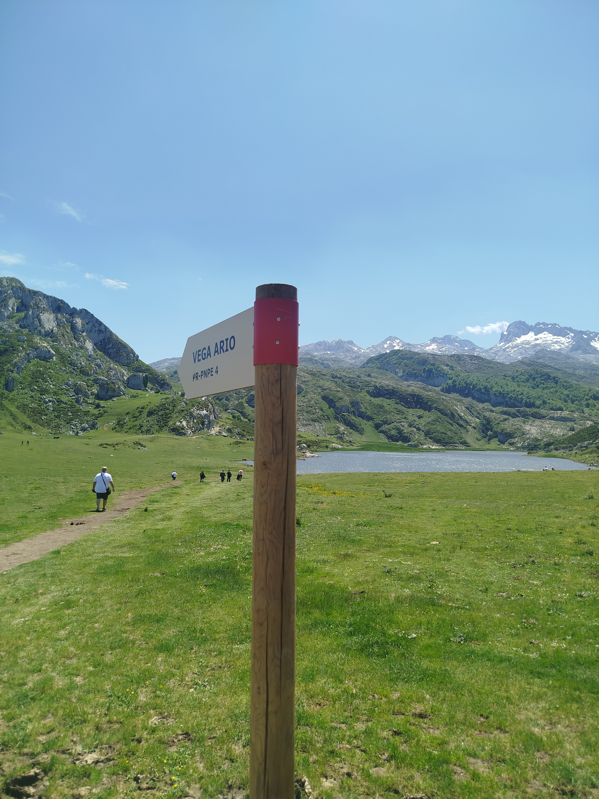
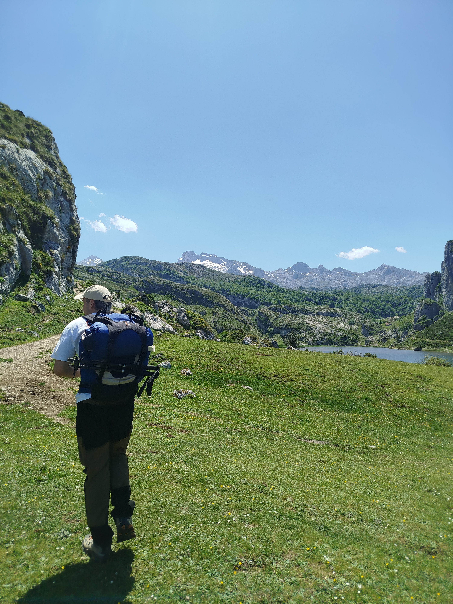
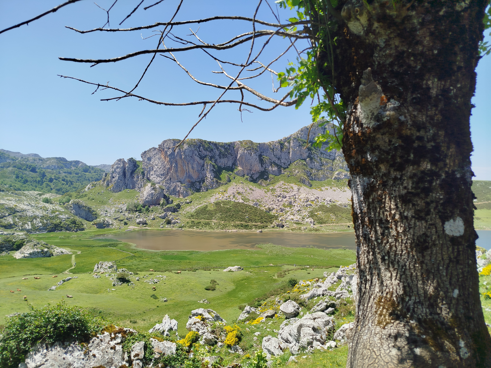
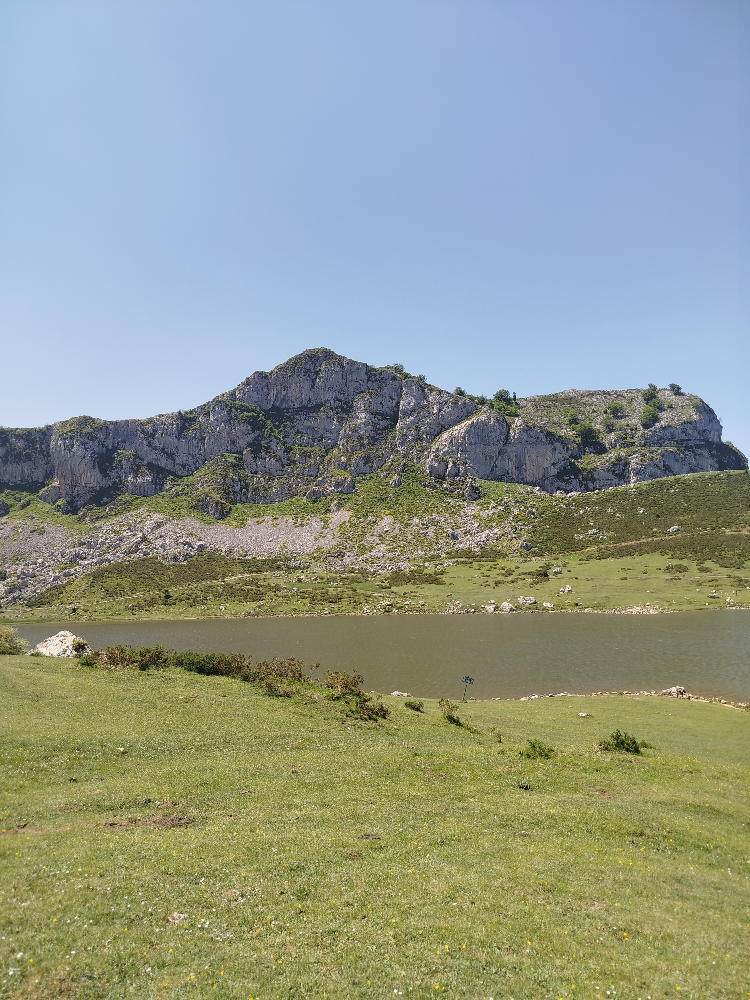
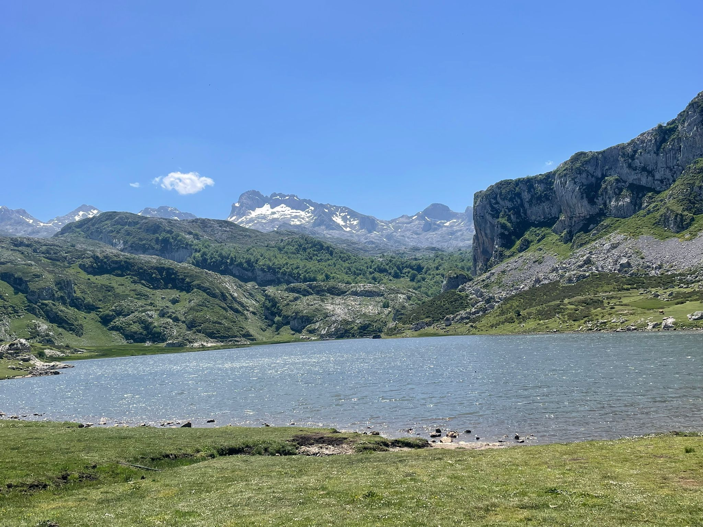

Lago Ercina

El lago de las praderas alpinas
El Lago Ercina, a 1.108 metros de altitud, es el mayor de los Lagos de Covadonga y uno de los más bellos de la Península Ibérica. A diferencia del Enol, que se asienta en un circo más cerrado, el Ercina se abre a una amplia vega de pastos alpinos que en verano se llena de coloridas flores silvestres y en primavera conserva manchas de nieve que contrastan con el verde intenso del prado. Un cuadro natural de proporciones memorables.
Majadas y tradición ganadera
Las orillas del Lago Ercina han sido pastos de verano para el ganado local desde tiempos inmemoriales. Las cabañas de piedra que salpican la vega son una muestra viva de la arquitectura pastoril asturiana y de una forma de vida que persiste hoy, aunque de manera más testimonial. En los meses de verano es habitual ver rebaños de vacas y ovejas pastando a escasos metros del lago, una estampa que mezcla a la perfección lo salvaje y lo cultural.
Base de partida hacia el interior del macizo
El Ercina es el punto de partida natural para las rutas más profundas del Macizo Occidental. Desde aquí parte la pista hacia Vegarredonda, el sendero hacia la Vega de Ario y el acceso al Collado de Belbín. El aparcamiento del Ercina es también el nudo de comunicaciones del área recreativa de los Lagos, con servicio de información del parque nacional y acceso controlado en temporada alta. Un lugar del que cuesta marcharse.




